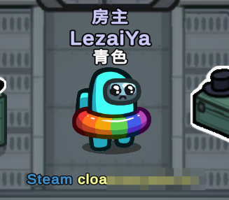

展示玩家平台与客户端信息
功能说明
启用该选项后，在大厅等待时，所有玩家的所属平台（如 Steam、Epic 等）及好友代码将会显示在玩家下方。 Starlight玩家则不显示所属平台
效果示意

录制提醒
直播与录制时建议关闭
在进行直播、素材录制等活动时建议关闭此功能来保护隐私。
启用该选项后，在大厅等待时，所有玩家的所属平台（如 Steam、Epic 等）及好友代码将会显示在玩家下方。 Starlight玩家则不显示所属平台

在进行直播、素材录制等活动时建议关闭此功能来保护隐私。